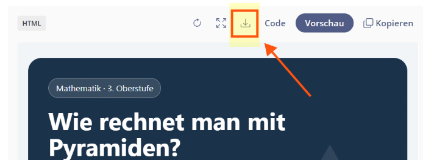

Was man eingibt und was dabei herauskommt. Beispiele aus dem Unterricht, jeweils mit dem Original-Prompt und der fertigen App.
Quelle: VisibleVibe, imedias FHNW, «Warum Lehrpersonen vibe-coden sollten», visiblevibe.ch
Quelle: VisibleVibe, imedias FHNW, «Warum Lehrpersonen vibe-coden sollten», visiblevibe.ch
Du baust genau das, was deine Klasse braucht.
Lehrpersonen gestalten ihr Material selbst.
Ausprobieren ist erlaubt.
Aufgaben strukturieren und sich in Lernende hineinversetzen.
Quelle: VisibleVibe, imedias FHNW, «Warum Lehrpersonen vibe-coden sollten», visiblevibe.ch
Start bei einem konkreten Lernproblem. Pädagogik vor Technologie.
Eine merkbare Struktur ist wichtiger als Technikwissen.
Nicht alle Bausteine müssen im ersten Prompt stehen. Die KI liefert einen Entwurf, der immer noch weiter verbessert und angepasst werden kann.
Beispiel-Prompt
«Erstelle eine Lern-App als einzelne HTML-Datei (CSS und JavaScript inline, keine externen Bibliotheken, keine Datenübertragung). Thema: Bruchrechnen, Addition gleichnamiger Brüche, 1. Oberstufe Schweiz Funktion: 10 Aufgaben nacheinander, Eingabefeld, sofortige Rückmeldung mit kurzem Tipp bei Fehlern, am Ende Punktestand. Gestaltung: grosse Schrift, hoher Kontrast, freundliche Sprache, Gamification-Charakter.»
Die Klammer ist nicht zwingend. Lässt du sie weg, ergänze «… die auch offline funktioniert».
Quelle: VisibleVibe, imedias FHNW, «Warum Lehrpersonen vibe-coden sollten», visiblevibe.ch
Keine Personendaten in KI-Tools.
Jede App selbst testen.
Die Denkarbeit bleibt bei den Lernenden.
Prototypen und Erfahrungen teilen.
Nur freie Bilder und Texte verwenden. Lizenzen von Vorlagen prüfen, bevor eine App öffentlich geteilt wird. Auch ganze Apps von Unternehmen sind geistiges Eigentum und dürfen nicht einfach nachgebaut werden.

Oben rechts über der Vorschau auf das Download-Symbol klicken. Du erhältst eine HTML-Datei.
Die Datei per Teams, Mail oder Lernplattform verteilen. Sie öffnet sich in jedem Browser. Für einen Link eignet sich GitHub Pages.
fobizz bietet nicht die neusten Modelle, und ein Chat stösst bei grossen Apps schnell an seine Grenzen. So umgehst du dieses Nadelöhr:
Beispiel
«Im angehängten Word-Dokument steht der HTML-Code meiner Lern-App. Ergänze eine zweite Schwierigkeitsstufe mit schwierigeren Aufgaben. Alles andere bleibt gleich. Gib mir die vollständige HTML-Datei zurück.»
Quelle: VisibleVibe, imedias FHNW, «Warum Lehrpersonen vibe-coden sollten», visiblevibe.ch
Die Absicht bestimmt den Anspruch ans Ergebnis.
Quelle: VisibleVibe, imedias FHNW, «Warum Lehrpersonen vibe-coden sollten», visiblevibe.ch